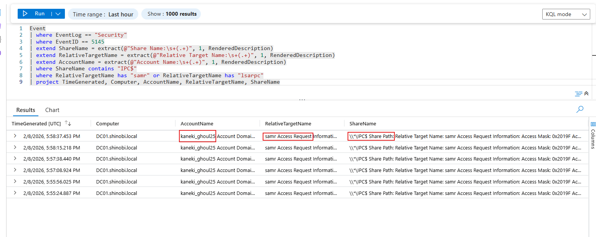
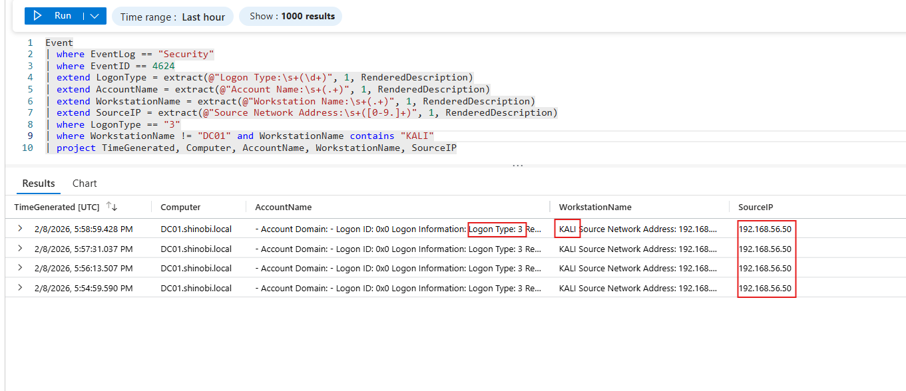
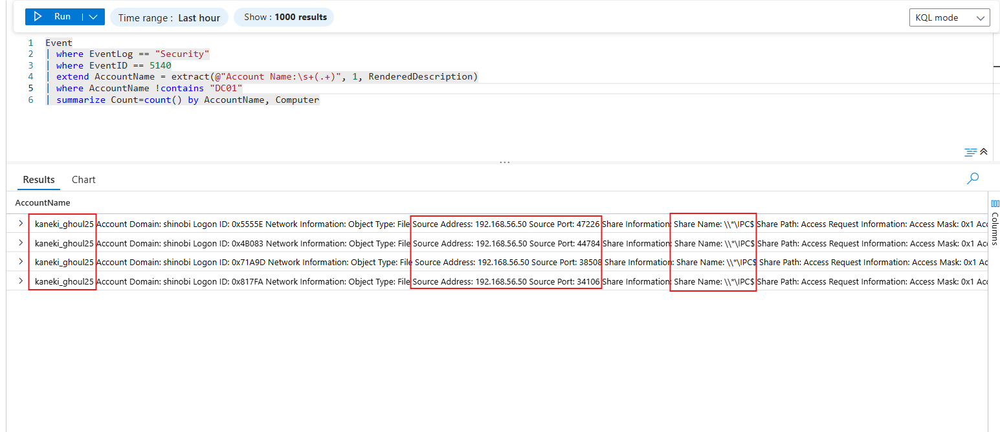

Detection & Telemetry (RPC Client)
Attack: The attacker (kaneki_ghoul25) utilized rpcclient to perform enumeration over the MS-RPC protocol. Unlike PowerShell, this tool does not leave script block logs. Detection Strategy: rpcclient relies heavily on connecting to Named Pipes (specifically samr and lsarpc) via the hidden IPC$ share. By monitoring access to these specific pipes coupled with Network Logons (Type 3) from Linux hosts, we can fingerprint the tool.
Attack: The command enumdomusers and queryuser interact directly with the SAMR (Security Account Manager Remote) pipe to pull user data. Logic: We query the Event table for Event ID 5145 (Detailed File Share) where the Share Name is \\*\IPC$ and the Relative Target Name is samr.
KQL Query:
Code snippet
Event
| where EventLog == "Security"
| where EventID == 5145
| extend ShareName = extract(@"Share Name:\s+(.+)", 1, RenderedDescription)
| extend RelativeTargetName = extract(@"Relative Target Name:\s+(.+)", 1, RenderedDescription)
| extend AccountName = extract(@"Account Name:\s+(.+)", 1, RenderedDescription)
| where ShareName contains "IPC$"
| where RelativeTargetName has "samr" or RelativeTargetName has "lsarpc"
| where AccountName has "kaneki_ghoul25"
| project TimeGenerated, Computer, AccountName, RelativeTargetName, ShareName
Analysis: This query confirms that kaneki_ghoul25 accessed the samr pipe. Normal users rarely access this pipe directly; it is almost exclusively accessed by domain controllers or administrative tools (like rpcclient or BloodHound).

Attack: rpcclient running from Kali Linux creates a specific type of network logon session. Logic: We look for Event ID 4624 (Successful Logon) where the Logon Type is 3 (Network), the user is kaneki_ghoul25, and the Source Workstation is a Linux-style name (often sent as rpcclient or the Kali hostname).
KQL Query:
Code snippet
Event
| where EventLog == "Security"
| where EventID == 4624
| extend LogonType = extract(@"Logon Type:\s+(\d+)", 1, RenderedDescription)
| extend AccountName = extract(@"Account Name:\s+(.+)", 1, RenderedDescription)
| extend WorkstationName = extract(@"Workstation Name:\s+(.+)", 1, RenderedDescription)
| extend SourceIP = extract(@"Source Network Address:\s+([0-9.]+)", 1, RenderedDescription)
| where LogonType == "3"
| where AccountName has "kaneki_ghoul25"
| where WorkstationName != "DC01" and where WorkstationName contains "KALI"
| project TimeGenerated, Computer, AccountName, WorkstationName, SourceIP
Analysis: The logs reveal a logon from IP 192.168.56.50 (Kali) where the Workstation Name might appear as KALI or remain blank, which is typical for non-Windows SMB clients.

Attack: The attacker ran netshareenum and received WERR_ACCESS_DENIED. Logic: We look for Event ID 5140 (Share Access) or 5145 with specific failure access masks, indicating an attempt to list shares that was blocked.
KQL Query:
Code snippet
Event
| where EventLog == "Security"
| where EventID == 5140
| extend AccountName = extract(@"Account Name:\s+(.+)", 1, RenderedDescription)
| where AccountName has "kaneki_ghoul25"
| summarize Count=count() by AccountName, Computer
